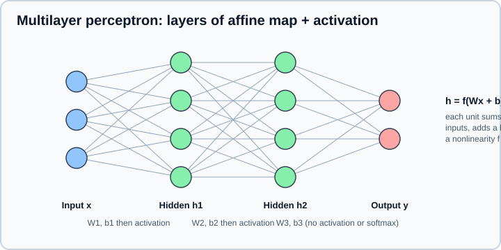
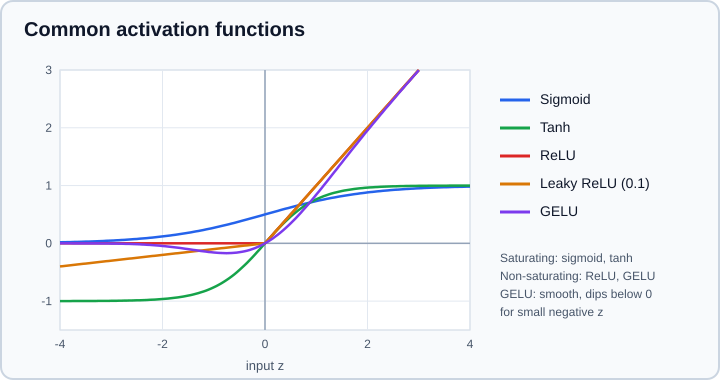

Neural Network Fundamentals: Perceptron, MLP & Activations
|
This content was generated with the assistance of AI and should be verified against the official documentation before being relied on in production. |
A neural network is a function built by stacking simple parts: each part multiplies its input by a matrix of learnable weights, adds a bias vector and passes the result through a fixed nonlinear function. Everything else in deep learning (convolutions, recurrence, attention, transformers) is a variation on that recipe with extra structure on the weights. This page builds the recipe from the single neuron up to the multilayer perceptron (MLP), explains why the nonlinearity is not optional, compares the activation functions you will meet, and shows how to pair the last layer with a loss function. The next two pages explain how the weights are learned: Backpropagation & Automatic Differentiation computes the gradients, and Training Deep Networks covers initialization, normalization and regularization.
Examples target Python 3.13, PyTorch 2.15, TensorFlow 2.21 with Keras 3.15 and NumPy 2.x. Examples were run on Python 3.13 with NumPy 2, PyTorch 2.15 (CPU), Keras 3.15 on TensorFlow 2.21 and scikit-learn 1.9.1 on 2026-11-01. Math prerequisites (matrices, derivatives, probability) are in Math for ML, and the loss functions mentioned below are derived in Loss Functions & Information Theory.
The artificial neuron
An artificial neuron computes a weighted sum of its inputs, adds a bias and applies an activation function \(f\):
\[ y = f\left(\sum_{i=1}^{d} w_i x_i + b\right) = f(\mathbf{w}^\top \mathbf{x} + b) \]
The weights \(w_i\) say how much each input matters, the bias \(b\) shifts the point where the neuron switches on, and \(f\) decides the shape of the response. With \(f\) the identity the neuron is linear regression; with \(f\) the logistic sigmoid it is logistic regression. A neural network is therefore a generalization of models you already know, and the difference is what happens when many such units are composed.
The perceptron
The perceptron (Rosenblatt, 1958) is the oldest learnable neuron. Its activation is a hard threshold: output 1 if \(\mathbf{w}^\top \mathbf{x} + b > 0\), otherwise 0. It defines a straight line (in 2D), plane (in 3D) or hyperplane that splits the input space into two half-spaces, so it can only classify data that is linearly separable.
The learning rule is simple and uses no calculus. For each training example, predict; if the prediction is right, change nothing; if it is wrong, move the weights toward the example when the true label is 1 and away from it when the true label is 0:
\[ \mathbf{w} \leftarrow \mathbf{w} + (t - \hat{y})\,\mathbf{x}, \qquad b \leftarrow b + (t - \hat{y}) \]
where \(t\) is the target and \(\hat{y}\) the prediction. The perceptron convergence theorem guarantees that this rule finds a separating hyperplane in a finite number of updates whenever one exists. When none exists, it never settles. The classic counterexample is XOR: no single line separates \((0,1)\) and \((1,0)\) from \((0,0)\) and \((1,1)\). Minsky and Papert pointed this out in 1969, and the observation (together with the lack of a method to train deeper models) contributed to the first decline of neural network research.
import numpy as np
X = np.array([[0, 0], [0, 1], [1, 0], [1, 1]], dtype=float)
y_and = np.array([0, 0, 0, 1])
y_xor = np.array([0, 1, 1, 0])
def train_perceptron(X, y, epochs=25):
w = np.zeros(X.shape[1])
b = 0.0
for epoch in range(epochs):
mistakes = 0
for xi, ti in zip(X, y):
pred = int(w @ xi + b > 0)
update = ti - pred # -1, 0 or +1
w += update * xi
b += update
mistakes += int(update != 0)
if mistakes == 0:
return w, b, epoch
return w, b, None
for name, y in [("AND", y_and), ("XOR", y_xor)]:
w, b, converged_at = train_perceptron(X, y)
print(name, "weights", w, "bias", b, "converged at epoch", converged_at)Output:
AND weights [2. 1.] bias -2.0 converged at epoch 5 XOR weights [-1. 0.] bias 1.0 converged at epoch None
AND converges after a few passes; XOR runs out of epochs without ever reaching zero mistakes. The weights printed for XOR are just wherever the last pass stopped.
From one neuron to a multilayer perceptron
Stacking neurons in layers fixes the XOR problem. A layer applies many neurons to the same input at once, which is one matrix multiplication. An MLP (also called a fully connected or dense feed-forward network) chains layers so that the output of one is the input of the next:
\[ \mathbf{h}_1 = f(\mathbf{W}_1 \mathbf{x} + \mathbf{b}_1), \quad \mathbf{h}_2 = f(\mathbf{W}_2 \mathbf{h}_1 + \mathbf{b}_2), \quad \hat{\mathbf{y}} = \mathbf{W}_3 \mathbf{h}_2 + \mathbf{b}_3 \]
Layers between the input and the output are hidden layers; the number of units in a layer is its width and the number of layers is the depth. Information flows in one direction only, which is why the family is called feed-forward.

The following hand-built network solves XOR. The first hidden unit computes \(\mathrm{ReLU}(x_1 + x_2)\), the second computes \(\mathrm{ReLU}(x_1 + x_2 - 1)\), and the output is the first minus twice the second. No learning is involved; the example only shows that one hidden layer is enough to represent a function a single neuron cannot.
import numpy as np
X = np.array([[0, 0], [0, 1], [1, 0], [1, 1]], dtype=float)
relu = lambda z: np.maximum(z, 0.0)
W1 = np.array([[1.0, 1.0], [1.0, 1.0]]) # (in_features, hidden)
b1 = np.array([0.0, -1.0])
w2 = np.array([1.0, -2.0])
hidden = relu(X @ W1 + b1)
print("XOR with one hidden layer:", hidden @ w2)Output:
XOR with one hidden layer: [0. 1. 1. 0.]
Why the nonlinearity is required
If the activation is the identity, two stacked layers collapse into one: \(\mathbf{W}_2(\mathbf{W}_1\mathbf{x} + \mathbf{b}_1) + \mathbf{b}_2 = (\mathbf{W}_2\mathbf{W}_1)\mathbf{x} + (\mathbf{W}_2\mathbf{b}_1 + \mathbf{b}_2)\), which is again a single linear map. A hundred linear layers are exactly as expressive as one. The nonlinearity between layers is what lets depth add capacity, so forgetting an activation (for example writing two Linear layers back to back) silently turns a deep network into linear regression.
What an MLP can represent
The universal approximation theorems (Cybenko 1989 for sigmoids, Hornik 1991 for general nonlinear activations, and later results for ReLU) state that a network with a single hidden layer and enough units can approximate any continuous function on a bounded region to any accuracy. Three cautions keep that result in perspective:
-
It is an existence statement. It does not say how many units are needed (possibly an astronomical number), that gradient descent will find the weights, or that the fitted function will generalize beyond the training data.
-
Depth often represents the same function with exponentially fewer units than width does, which is the practical reason deep networks beat wide shallow ones.
-
An MLP ignores the structure of its input. It treats a pixel grid or a sentence as an unordered vector, so structured data is better served by the architectures in Convolutional Neural Networks, RNNs, LSTMs & GRUs and Attention & Transformers.
Shapes and parameter counts
Deep learning code is mostly shape bookkeeping. The convention in both frameworks is batch first: a batch is a tensor of shape (N, features), and the same layer processes all \(N\) rows in parallel. A layer from \(d_\text{in}\) to \(d_\text{out}\) units has \(d_\text{in} d_\text{out} + d_\text{out}\) parameters. The frameworks store the weight matrix differently:
| Framework | Layer | Weight shape |
|---|---|---|
PyTorch |
|
|
Keras 3 |
|
|
The difference matters when you copy weights between frameworks or read a state_dict by hand. Both frameworks initialize weights randomly; the choice is not cosmetic and is the subject of the initialization section of the training page.
Activation functions
An activation function is applied element-wise, so it adds no parameters. The properties that matter are whether the function saturates (flattens, so its gradient approaches zero), whether it is centred on zero, whether it is cheap, and whether it is smooth.

| Function | Definition | Strengths | Weaknesses |
|---|---|---|---|
Sigmoid |
\(\sigma(z) = 1/(1+e^{-z})\), range (0, 1) |
Interpretable as a probability; right for a binary output or a gate |
Saturates at both ends so gradients vanish; not zero-centred; avoid in deep hidden stacks |
Tanh |
\(\tanh z\), range (-1, 1) |
Zero-centred, so it trains better than sigmoid; standard inside recurrent cells |
Still saturates |
ReLU |
\(\max(0, z)\) |
Cheap, does not saturate for positive inputs, sparse activations; the long-time default for hidden layers |
A unit whose input is always negative outputs 0 and receives zero gradient ("dying ReLU") |
Leaky ReLU / PReLU |
\(z\) if \(z>0\), else \(\alpha z\) (fixed or learned \(\alpha\)) |
Keeps a small gradient for negative inputs |
One more hyperparameter; usually a marginal gain |
GELU |
\(z\,\Phi(z)\), where \(\Phi\) is the normal CDF |
Smooth; the default in transformers (BERT, GPT-style models) |
Slightly more expensive than ReLU |
SiLU / Swish |
\(z\,\sigma(z)\) |
Smooth and self-gated; common in vision networks and in the gated MLPs of recent LLMs |
Slightly more expensive than ReLU |
Softplus |
\(\ln(1+e^{z})\) |
Smooth positive output; useful to produce a variance or a scale |
Not sparse; rarely a hidden activation |
Softmax |
\(e^{z_i}/\sum_j e^{z_j}\) |
Turns a vector of scores into a probability distribution |
Only for the output of a multi-class classifier (or an attention row); see below |
A reasonable default is ReLU (or GELU or SiLU for transformer-style models) in hidden layers, with the output layer chosen by the task. Reach for leaky ReLU only if you observe a large fraction of dead units. Sigmoid and tanh survive mainly where a bounded range is the point: gates in LSTMs and GRUs, and bounded outputs.
Vanishing and exploding gradients
Training multiplies local derivatives layer after layer (see Backpropagation & Automatic Differentiation). The derivative of the sigmoid is at most 0.25, so a stack of ten sigmoid layers can shrink the gradient reaching the first layer by a factor of about one million, and the early layers barely learn. ReLU’s derivative is exactly 1 for positive inputs, which is a large part of why it made deep networks trainable. Weights that are too large cause the opposite problem and the gradients explode. Careful initialization, normalization layers and residual connections (all in Training Deep Networks) keep the signal in a healthy range.
Dying ReLU
A ReLU unit whose pre-activation is negative for every input outputs zero and has zero gradient, so it can never recover. A learning rate that is too high, a bad initialization or a large negative bias can kill many units at once. Symptoms: a growing fraction of exactly-zero activations and a loss that plateaus early. Remedies: lower the learning rate, use a proper initialization, add normalization, or switch to leaky ReLU, GELU or SiLU.
Output layers and loss functions
The last layer is chosen from the task, and the loss must match it. The most common mistake is applying the output activation twice: the standard classification losses in both frameworks expect logits (raw, unnormalized scores) and apply the sigmoid or softmax internally in a numerically stable way.
| Task | Last layer | PyTorch loss (takes logits) | Keras 3 loss |
|---|---|---|---|
Regression |
|
|
|
Binary classification |
|
|
|
Multi-class, one label per example |
|
|
|
Multi-label, several labels per example |
|
|
|
Computing the sigmoid or softmax yourself and then taking the logarithm is both redundant and numerically fragile; the fused forms use the log-sum-exp trick. Apply the softmax or sigmoid only at inference time, when you want probabilities. The same stability issue is why a hand-written softmax subtracts the maximum before exponentiating, as the following snippet shows.
import numpy as np
def softmax(z):
z = z - z.max(axis=-1, keepdims=True) # stability: softmax is shift-invariant
e = np.exp(z)
return e / e.sum(axis=-1, keepdims=True)
print(softmax(np.array([1000.0, 1001.0, 1002.0])).round(3))Output:
[0.09 0.245 0.665]
Without the subtraction, np.exp(1000.0) overflows to infinity and the result is nan.
Building an MLP in PyTorch
nn.Module is the base class of every model. Layers assigned in __init__ are registered automatically, so model.parameters() finds them and model.to(device) moves them. The model returns logits.
import torch
from torch import nn
torch.manual_seed(0)
class MLP(nn.Module):
def __init__(self, in_features: int, hidden: int, n_classes: int):
super().__init__()
self.net = nn.Sequential(
nn.Linear(in_features, hidden),
nn.ReLU(),
nn.Linear(hidden, hidden),
nn.ReLU(),
nn.Linear(hidden, n_classes), # raw logits, no softmax
)
def forward(self, x):
return self.net(x)
model = MLP(in_features=20, hidden=64, n_classes=3)
x = torch.randn(8, 20) # a batch of 8 examples
y = torch.randint(0, 3, (8,)) # class indices, dtype int64
logits = model(x)
loss = nn.functional.cross_entropy(logits, y)
print(logits.shape, round(loss.item(), 3))
print("parameters:", sum(p.numel() for p in model.parameters()))
for name, p in model.named_parameters():
print(name, tuple(p.shape))
probs = torch.softmax(logits, dim=-1) # only when probabilities are needed
manual = -torch.log(probs[torch.arange(8), y]).mean()
print("fused loss equals manual loss:", torch.allclose(manual, loss))Output (the loss value depends on the random initialization):
torch.Size([8, 3]) 1.044 parameters: 5699 net.0.weight (64, 20) net.0.bias (64,) net.2.weight (64, 64) net.2.bias (64,) net.4.weight (3, 64) net.4.bias (3,) fused loss equals manual loss: True
The parameter count follows the formula above: \(20\cdot 64+64 + 64\cdot 64+64 + 64\cdot 3+3 = 5699\). Note the (out_features, in_features) weight shapes. Activation functions are available both as modules (nn.ReLU, nn.GELU, nn.SiLU) and as functions (torch.relu, torch.sigmoid, torch.tanh, nn.functional.gelu). Older books use F.sigmoid and F.tanh (use torch.sigmoid and torch.tanh) and torch.autograd.Variable (no longer needed, because plain tensors track gradients).
Building an MLP in Keras 3
Keras 3 is the default Keras for TensorFlow 2.16 and later (tf.keras is Keras 3), and it can also run on JAX or PyTorch backends. Pick the backend before the first import keras, for example with the KERAS_BACKEND environment variable. The Input object declares the input shape so that the weights are created immediately; the last Dense layer has no activation because the loss is configured with from_logits=True.
import numpy as np
import keras
from keras import layers
keras.utils.set_random_seed(0)
model = keras.Sequential(
[
keras.Input(shape=(20,)),
layers.Dense(64, activation="relu"),
layers.Dense(64, activation="relu"),
layers.Dense(3), # logits
]
)
model.compile(
optimizer="adam",
loss=keras.losses.SparseCategoricalCrossentropy(from_logits=True),
metrics=["accuracy"],
)
model.summary()
x = np.random.randn(256, 20).astype("float32")
y = np.random.randint(0, 3, size=(256,))
model.fit(x, y, batch_size=32, epochs=3, validation_split=0.2, verbose=2)
probs = keras.ops.softmax(model.predict(x[:4], verbose=0), axis=-1)
print(np.asarray(probs).sum(axis=-1))The summary reports the same 5,699 trainable parameters. Dense also accepts kernel_initializer, kernel_regularizer and use_bias arguments, which the training page uses. For models that are not a straight line of layers, use the functional API (keras.Model(inputs, outputs)) or subclass keras.Model.
Source: Keras guide: The Sequential model and Keras: Dense layer
MLPs in scikit-learn
For small tabular problems, MLPClassifier and MLPRegressor in scikit-learn offer the same model without a training loop. The scikit-learn user guide is explicit that they are not intended for large-scale applications and have no GPU support. They are sensitive to feature scaling, so put a StandardScaler in front, and the lbfgs solver is a good choice for small datasets while adam suits larger ones. See Pipelines for the scaling pattern, and move to PyTorch or Keras when you need GPUs, custom architectures or large data.
from sklearn.datasets import load_digits
from sklearn.model_selection import train_test_split
from sklearn.neural_network import MLPClassifier
from sklearn.pipeline import make_pipeline
from sklearn.preprocessing import StandardScaler
X, y = load_digits(return_X_y=True)
X_train, X_test, y_train, y_test = train_test_split(X, y, stratify=y, random_state=0)
clf = make_pipeline(
StandardScaler(),
MLPClassifier(hidden_layer_sizes=(64,), max_iter=500, random_state=0),
)
clf.fit(X_train, y_train)
print("test accuracy:", round(clf.score(X_test, y_test), 3))MLPs on tabular data
An MLP is the right tool for a vector of numbers only some of the time. On typical tabular data (mixed numeric and categorical columns, a few thousand to a few million rows) gradient-boosted trees usually match or beat a tuned MLP with far less tuning; see Tabular Data: Gradient Boosting vs Deep Learning. MLPs earn their place as components: the feed-forward block inside every transformer, the projection heads of embedding models, the policy and value networks of reinforcement learning, and the decoder of an autoencoder.
Practical guidance and common mistakes
-
Start small (two hidden layers of 64 to 256 units), confirm that the model can overfit a tiny subset of the data, and only then scale up. A model that cannot drive the loss near zero on 10 examples has a bug, not a capacity problem.
-
Standardize numeric inputs (zero mean, unit variance, statistics from the training split only). Unscaled inputs of very different magnitudes make optimization slow and unstable.
-
Check shapes first. Many errors are a missing batch dimension, a
(N, 1)target compared with a(N,)prediction (which broadcasts into an(N, N)loss), or integer targets given to a loss that expects floats. -
Do not put a softmax before
CrossEntropyLossorfrom_logits=True; do not put a sigmoid beforeBCEWithLogitsLoss. -
Do not forget the nonlinearity between layers, and do not put one after the last layer of a regression model.
-
Use
model.eval()andtorch.no_grad()(ortorch.inference_mode()) at inference in PyTorch. Layers such as dropout and batch normalization behave differently in training and evaluation mode; this is covered in Training Deep Networks. -
Prefer weights saved as a
state_dict; see the saving notes for thetorch.loaddefault that changed in PyTorch 2.6.
Where older books are outdated
The theory in older books (perceptron, universal approximation, activation properties) is still correct. The code is not:
| Older idiom | Current practice |
|---|---|
|
Plain tensors; |
|
|
|
|
|
|
|
Eager execution with Keras layers; see the TensorFlow sub-section for migration notes |
|
|